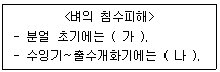
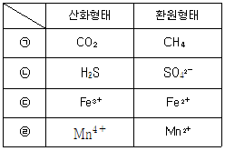
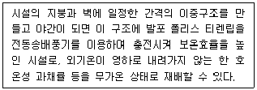
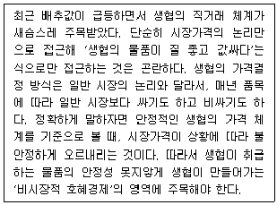
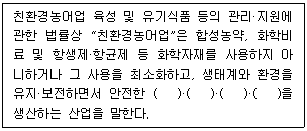
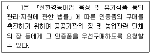

유기농업기사 (2020-08-22 기출문제)
1과목: 재배원론
1. 다음 중 토양의 입단구조를 파괴하는 요인으로서 가장 옳지 않은 것은?
- 경운
- 입단의 팽창과 수축의 반복
- 나트륨 이온의 첨가
- 토양의 피복
(정답률: 74%)

2. 작물재배를 생력화하기 위한 방법으로 가장 옳지 않은 것은?
- 농작업의 기계화
- 경지정리
- 유기농법의 실시
- 재배의 규모화
(정답률: 50%)
3. 토양수분이 부족할 때 한발저항성을 유도하는 식물호르몬으로 가장 옳은 것은?
- 시토키닌
- 에틸렌
- 옥신
- 아스시스산
(정답률: 65%)
4. 다음 중 생장억제물질이 아닌 것은?
- AMO-1618
- CCC
- GA2
- B-9
(정답률: 82%)
5. 다음 중 내염성이 가장 높은 작물은?
- 녹두
- 유채
- 고구마
- 가지
(정답률: 86%)
6. 지력유지를 위한 작부체계에서 '클로버' 재배할 때 이 작물을 알맞게 분류한 것으로 가장 옳은 것은?
- 포착작물
- 휴한작물
- 수탈작물
- 기생작물
(정답률: 83%)
7. 작물의 재배조건에 따른 T/R율에 대한 설명으로 가장 옳은 것은?
- 고구마는 파종기나 이식기가 늦어지면 T/R율이 감소된다.
- 질소비료를 많이 주면 T/R율이 감소된다.
- 토양공기가 불량하면 T/R율이 감소된다.
- 토양수분이 감소되면 T/R율이 감소된다.
(정답률: 72%)
8. 농업에서 토지생산성을 계속 증대시키지 못하는 주요 요인으로 가장 옳은 것은?
- 기술개발의 결여
- 노동 투하량의 한계
- 생산재 투하량의 부족
- 수확체감의 법칙이 작용
(정답률: 72%)
9. 용도에 따른 작물의 분류에서 포도와 무화과는 어느 것에 속하는가?
- 장과류
- 인과류
- 핵과류
- 곡과류
(정답률: 75%)
10. 땅속줄기로 번식하는 것으로만 나열된 것은?
- 감자, 토란
- 생강, 박하
- 백합, 마늘
- 다알리아, 글라디올러스
(정답률: 59%)
11. 포장요수량의 pF 값의 범위로 가장 적합한 것은?
- 0
- 0~2.5
- 2.5~2.7
- 4.5~6
(정답률: 77%)
12. 작물에서 낙과를 방지하기 위한 조치로 가장 거리가 먼 것은?
- 환상박피
- 방한
- 합리적인 시비
- 병해충 방제
(정답률: 72%)
13. 벼의 침수피해에 대한 내용이다. (가), (나)에 알맞은 내용은?

- (가) : 크다, (나) : 크다
- (가) : 크다, (나) : 작다
- (가) : 작다, (나) : 작다
- (가) : 작다, (나) : 크다
(정답률: 79%)
14. 식물이 한 여름철을 지낼 때 생장이 현저히 쇠퇴·정지하고, 심한 경우 고사하는 현상은?
- 하고현상
- 좌지현상
- 저온장해
- 추고현상
(정답률: 84%)
15. 식물의 영양생리의 연구에 사용되는 방사성 동위원소로만 나열된 것은?
- 32P, 42K
- 24Na, 80Al
- 60Co, 72Na
- 137Cs, 58Co
(정답률: 71%)
16. 파종 후 재배 과정에서 상대적으로 노력이 가장 많이 요구되는 파종 방법은?
- 산파
- 조파
- 점파
- 적파
(정답률: 62%)
17. 과수재배에서 환상박피를 이용한 개화의 촉진은 화성유인의 어떤 요인을 이용한 것인가?
- 일장 효과
- 식물 호르몬
- C/N율
- 버어널리제이션
(정답률: 58%)
18. 중위도 지대에서의 조생종은 어떤 기상생태형 작물인가?
- 감온형
- 감광형
- 기본영양생장형
- 중간형
(정답률: 64%)
19. 다음 중 과실에 봉지를 씌워서 병해충을 방제하는 것은?
- 경종적 방제
- 물리적 방제
- 생태적 방제
- 생물적 방제
(정답률: 68%)
20. 다음 중 장일성 식물로만 나열된 것은?
- 딸기, 사탕수수, 코스모스
- 담배, 들깨, 코스모스
- 시금치, 감자, 양파
- 당근, 고추, 나팔꽃
(정답률: 66%)
2과목: 토양비옥도 및 관리
21. 강우 시 강우량이 침투량보다 많을 때 발생하는 현상으로만 연결된 것은?
- 차단(interception), 유거(runoff)
- 침투(infiltration), 증발(evaporation)
- 모세관 상승(capillary rise), 유거(runoff)
- 유거(runoff), 침식(erosion)
(정답률: 66%)
22. 시설토양에 대한 설명으로 옳지 않은 것은?
- 염류 용탈이 심하여 꾸준한 비료 공급이 필요하다.
- 심한 답압과 인공관수로 인해 토양이 단단히 다져져 공극량이 적은 편이다.
- 염류집적 토양의 경우 관수를 하여도 물의 흡수가 방해된다.
- 대체로 토양 내 인산집적이 뚜렷하게 나타난다.
(정답률: 64%)
23. 토양을 조사하고 분류할 때 기본적으로 토양의 단면 특성을 파악해야 한다. 이 때 조사해야 할 특성에 해당되지 않는 것은?
- 토양층위의 발달
- 토색
- 토양미생물 구성
- 토양 구조
(정답률: 57%)
24. 인산에 대한 설명으로 옳지 않은 것은?
- pH가 낮은 토양에서는 철 및 알루미늄과 반응하여 용해도가 감소한다.
- pH가 높은 토양에서는 칼슘가 반응하여 용해도가 감소한다.
- 인산의 식물 흡수형태는 HPO42-와 H2PO4- 이다.
- 음이온 형태이므로 토양에 흡착되지 않고 쉽게 용탈된다.
(정답률: 44%)
25. 우리나라 대부분의 토양이 산성인 원인으로 가장 옳지 않은 것은?
- 모암이 화강암과 화강편마암이기 때문
- 지표면에서의 수분 증발산량보다 많은 강우량 때문
- 과다한 질소질 화학비료 사용 때문
- 제올라이트 광물의 객토 때문
(정답률: 48%)
26. 토양수분의 측정방법이 아닌 것은?
- 중성자법
- tensiometer법
- psychrometer법
- 양이온 측정법
(정답률: 56%)
27. 작물의 생육 중 삼투압 및 이온균형조절, 광합성과정에서의 물의 광분해에 관여하는 원소로 옳은 것은?
- B
- Cl
- Si
- Na
(정답률: 48%)
28. 질화작용의 과정으로 옳은 것은?
- NO2- → NH4+ → NO3-
- NO2- → NO3- → NH4+
- NO3- → NH4+ → NO2-
- NH4+ → NO2- → NO3-
(정답률: 68%)
29. 균근류와 공생함으로써 식물이 얻을 수 있는 이점이 아닌 것은?
- 식물의 광합성 효율이 증대된다.
- 뿌리의 병원균 감염이 억제된다.
- 뿌리의 유효면적이 증대된다.
- 식물의 인산 등 양분흡수가 증대된다.
(정답률: 56%)
30. 토양 15g을 1⑤℃ 건조기에 넣고 24~48시간 건조시킨 후의 무게가 12g 이었다. 이 토양의 중량수분함량은?(오류 신고가 접수된 문제입니다. 반드시 정답과 해설을 확인하시기 바랍니다.)
- 20%
- 25%
- 50%
- 80%
(정답률: 41%)
31. 비료의 반응에 대한 설명으로 옳은 것은?
- 생리적 반응이란 비료 수용액의 고유반응을 말한다.
- 중성비료를 시용하면 토양은 중성이 되고, 염기성 비료를 시용하면 토양이 염기성이 된다.
- 용성인비, 토마스 인비, 나뭇재는 화학적으로 염기성 비료이다.
- 유기질 비료는 분해 시 젖산, 초산 등의 유기산만 생성하여 반응이 일정하다.
(정답률: 58%)
32. 토앵 내 성분의 산화·환원 형태가 잘못된 것은?

- ㉠
- ㉡
- ㉢
- ㉣
(정답률: 62%)
33. 미생물의 에너지원과 영양원으로 작용하는 물질로 알맞게 짝지어진 것은?
- 규소 - 붕소
- 탄소 - 질소
- 염소 - 인
- 비소 – 철
(정답률: 67%)
34. 토양의 용적밀도 1.3 g/cm3, 입자밀도 2.6 g/cm3, 점토함량 15%, 토양수분 26%, 토양구조가 사열구조일 때 공극률은?
- 7.5%
- 13%
- 25%
- 50%
(정답률: 56%)
35. 토양 내 질소의 고정화 반응과 무기화반응이 동등하게 일어날 수 있는 C/N율의 범위는?
- 5~15
- 20~30
- 40~50
- 60~70
(정답률: 63%)
36. 질소기아현상에 대한 설명으로 옳지 않은 것은?
- 대체로 탄질률이 30 이상일 때 나타난다.
- 토양미생물과 식물 사이의 질소경쟁으로 나타난다.
- 탄질률이 15 이하가 되면 해소된다.
- 볏짚을 시용하면 해소될 수 있다.
(정답률: 70%)
37. 유수에 의해 토양이 침식될 때 토양 내 양분과 가용성 염류, 유기물이 같이 씻겨 내려가는 토양 침식을 일컫는 용어는?
- 우곡침식
- 평면침식
- 유수침식
- 비옥도침식
(정답률: 52%)
38. 토양생성 중 나타나는 풍화작용에 대한 설명으로 틀린 것은?
- 모암이 토양이 되기 위해서는 붕괴, 분해과정을 거쳐서 모재가 되어야 한다.
- 풍화작용은 물리적→화학적→생물적 순서로 진행된다.
- 화학적 풍화작용은 산화, 환원, 가수분해 등의 화학작용이 수반된다.
- 산악지와 같은 경사지에서의 풍화물은 중력, 물, 바람 등의 작용으로 운적모재가 된다.
(정답률: 70%)
39. 토양 유효토심의 제한요인으로 볼 수 없는 것은?
- 암반
- 지하수위
- 모래 및 자갈
- 식생
(정답률: 51%)
40. 토양 생성의 주요 인자에 해당되지 않는 것은?
- 기후
- 모재
- 경운
- 시간
(정답률: 75%)
3과목: 유기농업개론
41. 「부엽토와 지렁이」라는 책의 저술자로 유기농법의 이론적 근거를 최초로 제공한 사람과, 관련된 내용으로 옳은 것은?
- 다윈(Darwin, C.)은 만일 지렁이가 없다며 식물은 죽어 사라질 것이라고 주장하였다.
- 러셀(Russel, E. J.)은 지렁이 수와 유기물 시용양은 상관관계가 있다고 주장하였다.
- 프랭클린 킹(Franklin King)은 유축순환농업을 전통적 농업생산의 이상적 모델로 삼았다.
- 하워드(Howard, A.)는 '부엽토와 지렁이' 이후에 1940년 농업성전(An Agricultural Testament)을 저술하였다.
(정답률: 66%)
42. 퇴비의 검사에 대한 설명으로 틀린 것은?
- 관능적 방법은 발효가 끝난 퇴비의 형태, 색깔, 고유한 냄새를 검사하여 판단하는 것이다.
- 화학적 방법은 탄질률 검사법과 pH 검사법이 있다.
- 생물학적 방법 중 지렁이법은 부숙이 완료된 시료에 지렁이를 넣어 그 행동을 보고 퇴비의 양부를 판단하는 방법이다.
- 물리적 방법 중 유식물 시험법은 유해물질에 민감한 어린 묘를 실험퇴비에 이식하여 그 양부를 물리적으로 판정하는 방법이다.
(정답률: 64%)
43. 윤작의 효과에 대한 설명으로 틀린 것은?
- 토양 전염성 병해충의 발생 억제
- 기지현상 발생 촉진
- 수량 증가와 품질 향상
- 토양 통기성의 개선
(정답률: 69%)
44. 수경재배의 특징으로 틀린 것은?
- 자원을 절약하고 환경을 보존한다.
- 근권환경이 단순하여 관리하기가 쉽다.
- 재배관리의 생력화와 자동화가 편리하다.
- 양액의 완충능력이 강하다.
(정답률: 57%)
45. 포장의 해충을 방제하기 위한 기피식물이나 익충 또는 유용 곤충의 밀도를 높이기 위한 대표적인 식물이라고 볼 수 없는 것은?
- 금잔화
- 마디꽃
- 멕시코 해바라기
- 쑥국화
(정답률: 50%)
46. 친환경농축산물 및 유기식품 등의 인증에 관한 세부실시요령상 한우 1두를 유기적으로 사육하는데 필요한 목초지의 최소 면적은? (단, 특수하게 외부에서 유기적으로 생산된 조사료를 도입할 경우를 제외한다.)
- 660m2
- 2475m2
- 3960m2
- 4921m2
(정답률: 65%)
47. 다음 중 유기농법의 병충해 방제에 있어 경종적 방제법으로 볼 수 없는 것은?
- 품종의 선택
- 병원 미생물 이용
- 종자의 선택
- 수확물의 건조
(정답률: 63%)
48. 벼 육묘에 있어 자가상토의 최적 산도(pH)는?
- 3.0 ~ 4.0
- 4.5 ~ 5.5
- 6.0 ~ 7.0
- 7.5 ~ 8.5
(정답률: 55%)
49. 육성된 품종 종자의 유전적 순도 유지방법으로 틀린 것은?
- 일정한 기간 내 종자갱신
- 이품종과 격리재배
- 이형주 제거
- 무병종자 상온저장
(정답률: 57%)
50. 유기농업에서 종자를 선정할대 적합하지 않은 것은?
- 건실한 종자
- 유기종자
- 화학약제로 소독한 종자
- 오염되지 않은 고품질 종자
(정답률: 72%)
51. 녹비작물로 적합하지 않은 작물은?
- 자운영
- 클로버류
- 브로콜리
- 베치류
(정답률: 62%)
52. 유기축산 돼지 관리에서 자돈에게 실시하는 관리방법이 아닌 것은?
- 절치
- 단미
- 거세
- 제각
(정답률: 45%)
53. 소나 돼지와 같은 우제류에 발생하는 심각한 전염병인 구제역의 병원체 종류는?
- 세균
- 바이러스
- 진균
- 원충
(정답률: 73%)
54. 종자용으로 사용할 벼 종자를 열풍 건조할 시 가장 적정한 온도는?
- 30 ~ 35℃
- 40 ~ 45℃
- 50 ~ 55℃
- 60 ~ 65℃
(정답률: 50%)
55. 유기농법에서 토양비옥도 유지·증진을 위한 방법으로 가장 적합한 것은?
- 화염제초
- 기계적 경운
- 두과작물 재배
- 저항성 품종 파종
(정답률: 67%)
56. 농림축산식품부 소관 친환경농어업 육성 및 유기식품 등의 관리·지원에 관한 법률 시행규칙상 유기축산물의 사료 및 영양관리 기준에 대한 설명으로 틀린 것은?
- 반추가축에게는 사일리지(silage)만 급여할 것
- 유전자변형농산물에서 유래한 물질은 급여하지 않을 것
- 합성화합물 등 금지물질을 사료에 첨가하지 아니할 것
- 가축에게 생활용수 수질기준에 적합한 음용수를 상시 급여할 것
(정답률: 67%)
57. 잡종강세에 대한 설명으로 틀린 것은?
- F3 세대에서 가장 크게 발현된다.
- 자식성작물보다 타식성작물에서 월등히 크게 나타난다.
- 잡종강세 식물은 불량환경에 저항력이 강한 경향이 있다.
- 잡종강세 식물은 생장발육이 왕성하다.
(정답률: 60%)
58. 논을 몇 년 동안 담수한 상태와 배수한 밭 상태로 돌려가면서 이용하는 것은?
- 이어짓기
- 답전윤환
- 엇갈아짓기
- 둘레짓기
(정답률: 72%)
59. 다음에서 설명하는 온실은?

- 에어하우스
- 펠레트하우스
- 이동식하우스
- 비가림하우스
(정답률: 57%)
60. 수경재배의 고형배지경 중 유기배지경에 해당하는 것은?
- 암면경
- 펄라이트경
- 사경
- 코코넛 코이어경
(정답률: 64%)
4과목: 유기식품 가공.유통론
61. 식품가공에서 쓰이는 1%는 몇 ppm 인가?
- 100
- 1000
- 10000
- 100000
(정답률: 61%)
62. 초고압 살균에 대한 설명으로 틀린 것은?
- 향미성분은 파괴될 수 있으나 단백질의 변성이 없다.
- 오차가 적고 균일한 가공처리가 가능하다.
- 대형화, 연속처리가 곤라하다.
- 수분이 적은 식품이나 다공질의 식품에 적당하다.
(정답률: 59%)
63. 잼 및 젤리제조 시 젤리화에 필요한 요인으로 바르게 짝지어진 것은?
- 섬유소, 당, 산
- 당, 산, 덱스트린
- 산, 덱스트린, 섬유소
- 당, 산, 펙틴
(정답률: 69%)
64. 유기가공식품에서 식품 표면에 세척, 소독제로서 가공보조제로만 사용이 가능한 것은?
- 과산화수소
- 수산화나트륨
- 무수아황산
- 구연산
(정답률: 61%)
65. 아래 기사를 참고하였을 때 생협의 유통방식에 해당하지 않는 것은?

- 수급방식 - 생산계약
- 사업방식 - 계통출하
- 가격결정방식 - 협의가격
- 사업범위 – 생산·유통·가공·소비
(정답률: 48%)
66. 세균의 generation time 이 30분일 때 초기세균수 103개가 109개로 되는데 걸리는 시간은? (단, log2는 0.3으로 계산한다.)
- 10 시간
- 20 시간
- 25 시간
- 40 시간
(정답률: 34%)
67. 유기가공식품 및 비식용유기가공품의 제조·가공 방법으로 잘못된 것은?
- 기계적, 물리저거 또는 화학적(분해, 합성 등) 제조·가공방법을 사용하여야 하고, 식품첨가물을 최소량 사용하여야 한다.
- 유기가공에 사용되는 원료, 식품첨가물, 가공보조제 등은 모두 유기적으로 생산된 것이어야 한다.
- 비유기원료의 사용이 필요한 경우에는 국립농산물품질관리원장이 정하여 고시하는 기준에 따라 비유기원료를 사용하여야 한다.
- 유기식품·가공품에 시설이나 설비 또는 원료의 세척, 살균, 소독에 사용된 물질이 함유되지 않아야 한다.
(정답률: 63%)
68. 식품 포장에 대한 설명으로 틀린 것은?
- 식품의 품질 보존은 포장 재료의 물리적 성질과 화학적 성질에 크게 좌우되며, 포장 후의 환경 조건에 의해서도 좌우된다.
- 포장 식품의 성분 변화는 포장 후의 온도, 습도, 광선 등이 일정하더라도, 포장 재료의 성질에 따라 달라질 수 있다.
- 폴리에틸렌 포장 재료는 유리병에 비하여 투수, 투광, 기체 투과성이 높으므로 포장식품의 품질 보존이 유리하다.
- 가공 식품에 있어서 흡습, 방습에 의한 물성과 성분 변화를 방지하기 위해서는 투수성이 없는 포장재를 사용하는 것이 바람직하다.
(정답률: 68%)
69. 농산물 유통의 특성이 아닌 것은?
- 계절의 편재성
- 부피와 중량성
- 부패성과 용도의 다양성
- 양과 질의 균일성
(정답률: 53%)
70. 감의 떫은맛을 제거하기 위하여 사용하는 탈삽 방법이 아닌 것은?
- 알코올 탈삽법
- 온탕 탈삽법
- 이산화탄소 탈삽법
- 유황 탈삽법
(정답률: 55%)
71. 우유의 저온살균 방법(온도와 시간)은?
- 63℃, 15분
- 63℃, 30분
- 121℃, 15초
- 121℃, 30초
(정답률: 64%)
72. 다음 중 습도 및 산소 차단성이 모두 우수한 플라스틱 포장재는?
- 무연신 폴리프로필렌(CPP)
- 저밀도 폴리에틸렌(LDPE)
- 염화비닐리덴(PVDC)
- 에틸렌비닐알코올 공중합체(EVOH)
(정답률: 53%)
73. 친환경농산물 유통경로에서 유통조직들이 수행하는 기능이 아닌 것은?
- 필요한 시장정보를 수집·분석하고 분배하는 역할
- 유통과정에서 발생할 가능성이 있는 손실을 부담하는 역할
- 일정한 척도와 기준에 따라 표준화, 등급화 하는 역할
- 고품질 농산물을 생산해서 출하시기를 조정하는 역할
(정답률: 52%)
74. 식품의 HACCP 관리에서 일반적인 위해요소의 종류가 옳게 연결된 것은?
- 생물학적 위해요소 - 세균
- 물리적 위해요소 - 첨가물
- 물리적 위해요소 - 자연독
- 생물학적 위해요소 – 항생제
(정답률: 68%)
75. 유기가공식품 제조 시 식품첨가물로 사용할 때 허용범위에 제한이 없는 첨가물이 아닌 것은?
- 구아검
- 구연산칼륨
- DL-사과산
- 주정(발효주정)
(정답률: 48%)
76. 우유 부패균에 의한 변색이 잘못 연결된 것은?
- Pseudomonas fluorescens - 녹색
- Pseudomonas synxantha - 자색
- Pseudomonas syncyanea - 청색
- Serratia marcescens - 적색
(정답률: 42%)
77. 분유를 제조할 때 주로 사용되는 건조방법은?
- 분무건조
- 열풍건조
- 동결건조
- 드럼건조
(정답률: 50%)
78. 유기가공식품 제조공장의 관리방법이 아닌 것은?
- 공장의 해충은 기계적, 물리적, 화학적 방법으로 방제한다.
- 합성농약자재 등을 사용할 경우 유기가공식품 및 유기농산물과 직접 접촉하지 아니하여야 한다.
- 제조설비 중 식품과 직접 접촉하는 부분의 세척, 소독은 화학약품을 사용하여서는 아니 된다.
- 식품첨가물을 사용한 경우에는 식품첨가물이 제조설비에 잔존하여서는 아니 된다.
(정답률: 72%)
79. 최확수법(MPN법)을 이용한 대장균군의 정량검사 중 균의 유무추정 시험에 사용되는 배지는?
- EMB 배지
- KI 배지
- BTB 배지
- BGLB 배지
(정답률: 49%)
80. 소비자에게 판매 가능한 최대기간으로써 설정시험 등을 통해 산출된 기간은?
- 품질유지기간
- 유통기간
- 유통기한
- 권장유통기한
(정답률: 60%)
5과목: 유기농업관련 규정
81. 「농림축산식품부 소관 친환경농어업 육성 및 유기식품 등의 관리·지원에 관한 법률 시행규칙」상 사람의 배설물이 토양개량과 작물생육을 위하여 사용가능한 물질이 되기 위한 조건에 해당되지 않는 것은?
- 완전히 발효되어 부숙된 것일 것
- 저온발효 : 3개우러 이상 발효된 것일 것
- 고온발효 : 50℃ 이상에서 7일 이상 발효된 것
- 엽채류 등 농산물·임산물 중 사람이 직접 먹는 부위에는 사용하지 않을 것
(정답률: 64%)
82. 「농림축산식품부 소관 친환경농어업 육성 및 유기식품 등의 관리·지원에 관한 법률 시행규칙」상 유기농산물 및 유기임산물의 병해충관리를 위하여 사용이 가능한 물질이 아닌 것은?
- 쿠아시아(Quassia) 추출물
- 라이아니아(Ryania) 추출물
- 제충국 추출물
- 메틸알콜
(정답률: 70%)
83. 「농림축산식품부 소관 친환경농어업 육성 및 유기식품 등의 관리·지원에 관한 법률 시행규칙」에 따라 과수의 병해관리용으로만 사용가능한 물질은?
- 인산철
- 과망간산칼륨
- 파라핀 오일
- 중탄산나트륨
(정답률: 54%)
84. 다음 중 ( )에 알맞은 내용은?

- 농산물, 유기식품, 가공품, 임산물
- 농산물, 수산물, 축산물, 해산물
- 농산물, 해산물, 가공품, 축산물
- 농산물, 수산물, 축산물, 임산물
(정답률: 62%)
85. 다음 ( )안에 해당하지 않는 자는?

- 농림축산식품부장관
- 해양수산부장관
- 농협조합장
- 지방자치단체의 장
(정답률: 54%)
86. 「친환경농어업 육성 및 유기식품 등의 관리·지원에 관한 법률」상 친환경농어업 육성계획에 포함되어야 할 항목이 아닌 것은?
- 농어업 분야의 환경보전을 위한 정책목표 및 기본방향
- 농어업의 환경오염 실태 및 개선대책
- 친환경농어업의 시범단지 육성 방안
- 친환경농축산물 규격 표준화 방안
(정답률: 51%)
87. 「농림축산식품부 소관 친환경농어업 육성 및 유기식품 등의 관리·지원에 관한 법률 시행규칙」상 유기식품 등의 표시기준으로 틀린 것은?
- 표시 도형 내부의 “유기”의 글자는 품목에 따라 “유기식품”, “유기농”, “유기농산물”, “유기축산물”, “유기가공식품”, “유기사료”, “비식용유기가공품”으로 표기할 수 있다.
- 도형 표시방법에서 표시 도형의 가로의 길이(사각형의 왼쪽 끝과 오른쪽 끝의 폭 : W)를 기준으로 세로의 길이는 0.95×W의 비율로 한다.
- 표시 도형의 색상은 녹색을 기본 색상으로 하되, 포장재의 색깔 등을 고려하여 파란색, 빨간색 또는 검은색으로 할 수 있다.
- 표시 도형의 국민 및 영문 모두 글자의 활자체는 명조체로 하고, 글자 크기는 표시도형의 크기에 따라 조정한다.
(정답률: 64%)
88. 「농림축산식품부 소관 친환경농어업 육성 및 유기식품 등의 관리·지원에 관한 법률 시행규칙」에 따른 유기가공식품 인증기준에 관한 설명으로 옳은 것은?
- 유기가공식품의 해충 및 병원균 관리를 위해 방사선 조사 방법을 사용할 것
- 유기사업자는 유기식품의 가공 및 유통과정에서 원료의 양분을 훼손하지 아니할 것
- 유기가공식품의 가공원료는 제조 시 원재료 이외의 어떠한 물질도 혼합하지 아니할 것
- 모든 원료와 최종 생산물의 관리, 가공시설·기구 등의 관리 및 제품의 포장·보관·수송 등의 취급과정에서 유기적 순수성이 유지되도록 관리할 것
(정답률: 53%)
89. 「농림축산식품부 소관 친환경농어업 육성 및 유기식품 등의 관리·지원에 관한 법률 시행규칙」의 유기가공식품 인증기준에서 유기가공에 사용할 수 있는 가공원료의 기준으로 틀린 것은?
- 해당 식품의 제조·가공에 사용한 원재료의 85% 이상이 친환경농어업법에 의거한 인증을 받은 유기농산물일 것
- 유기가공에 사용되는 원료, 식품첨가물, 가공보조제 등은 모두 유기적으로 생산된 것일 것
- 제품 생산을 위해 비유기원료인 사용이 필요한 경우 국립농산물품질관리원장이 정하여 고시하는 기준에 따라 비유기운료를 사용할 것
- 유전자변형생물체 및 유전자변형생물체에서 유래한 원료는 사용하지 아니할 것
(정답률: 70%)
90. 「친환경농어업 육성 및 유기식품 등의 관리·지원에 관한 법률」에서 친환경농수산물을 정의하는 각 목으로 틀린 것은?
- 유기농수산물
- 무항생제축산물
- 활성처리제 비사용 수산물
- 화학자재 최소화 농수산물
(정답률: 65%)
91. 「농림축산식품부 소관 친환경농어업 육성 및 유기식품 등의 관리·지원에 관한 법률 시행규칙」상 인증기관에 대한 행정처분 기준으로 틀린 것은?
- 거짓이나 그 밖의 부정한 방법으로 지정을 받은 경우 1회 위반 시 지정 취소한다.
- 정당한 사유없이 1년 이상 계속하여 인증을 하지 않은 경우 1회 위반 시 경고, 2회 위반 시 지정 취소한다.
- 업무정지 명령을 위반하여 정지기간 중 인증을 한 경우 1회 위반 시 지정 취소한다.
- 시정조치 명령이나 처분에 따르지 않은 경우 1회 위반 시 업무정지 6개월, 2회 위반 시 지정 취소한다.
(정답률: 50%)
92. 「친환경농어업 육성 및 유기식품 등의 관리·지원에 관한 법률」에 따라 농어업 자원·환경 및 친환경농어업 등에 관한 실태조사·평가를 수행할 때 주기적으로 조사·평가하여야 할 항목이 아닌 것은?
- 농경지의 비옥도, 중금속 등의 변동 사항
- 농어업 용수로 이용되는 지표수와 지하수의 수질
- 친환경농어업 발전을 위한 각종 기술 등의 개발·보급·교육 및 지도방안
- 수자원 함양, 토양 보전 등 농어업의 공익적 기능 실태
(정답률: 53%)
93. 「농림축산식품부 소관 친환경농어업 육성 및 유기식품 등의 관리·지원에 관한 법률 시행규칙」에 따라 토양개량과 작물생육을 위해 사용이 가능한 물질이면서 병해충 관리를 위하여 사용이 가능한 물질은?
- 보르도액
- 황산칼륨
- 님추출물
- 미생물 및 미생물추출물
(정답률: 40%)
94. 「친환경농축산물 및 유기식품 등의 인증에 관한 세부실시요령」상 친환경농산물의 인증심사를 위한 현장심사에 관한 내용으로 틀린 것은?
- 농림산물의 검사항목 중 용수는 수역별 농업용수 또는 먹는 물 기준이 설정된 성분을 검사한다.
- 축산물 생산을 위한 사료에 유기합성농약성분 및 동물용의약품 성분으로 국립농산물품질관리원장이 정하는 성분 또는 사용이 의심되는 성분의 검사를 실시한다.
- 현장심사는 신청한 농산물, 축산물, 가공품의 생산이 완료되는 시기에는 실시할 수 없다.
- 최근 3년 이내에 검사가 이루어지지 않은 용수를 사용하는 경우에는 반드시 수질검사를 실시해야 한다.
(정답률: 43%)
95. 「유기가공식품 동등성 인정 및 관리요령」에서 유기가공식품을 관리하는 외국의 정부가 유기가공식품의 생산, 제조·가공 또는 취급과 관련된 법적 요구사항이 유기가공식품에 일관되게 적용되는지를 확인하는 일련의 활동을 일컫는 말은?
- 일관성 검증시스템
- 일관성 평가시스템
- 동등성 검증시스템
- 적합성 평가시스템
(정답률: 41%)
96. 「농림축산식품부 소관 친환경농어업 육성 및 유기식품 등의 관리·지원에 관한 법률 시행규칙」에 따른 유기가공식품 제조 시 식품첨가물 또는 가공보조제로 사용가능한 물질이 아닌 것은?
- 과일주의 무수아황산
- 두류제품의 염화칼슘
- 통조림의 글루타민산나트륨
- 유제품의 구연산삼나트륨
(정답률: 46%)
97. 「친환경농어업 육성 및 유기식품 등의 관리·지원에 관한 법률」에서 규정한 인증 등에 관한 부정행위에 해당하지 않는 것은?
- 거짓이나 그 밖의 부정한 방법으로 유기식품 등의 인징을 받거나 인증기관으로 지정받는 행위
- 인증을 받지 아니한 제품에 유기표시나 이와 유사한 표시를 하는 행위
- 인증품에 인증을 받지 아니한 제품 등을 섞어서 판매하거나 섞어서 판매할 목적으로 보관, 운반 또는 진열하는 행위
- 인증을 받은 유기식품을 다시 포장하지 아니하고 그대로 저장, 운송, 수입 또는 판매하는 자가 취급자 인증을 신청하지 아니하는 행위
(정답률: 65%)
98. 「농림축산식품부 소관 친환경농어업 육성 및 유기식품 등의 관리·지원에 관한 법률 시행규칙」상 유기식품등의 인증신청 시 제출해야 하는 서류가 아닌 것은?
- 인증품 생산 계획서
- 인증품 제조·가공 및 취급 계획서
- 식품제조업 허가증 또는 영업신고서
- 친환경농업에 관한 교육 이수 증명자
(정답률: 39%)
99. 「친환경농어업 육성 및 유기식품 등의 관리·지원에 관한 법률」에서 정한 유기농어업자재 공시의 유효기간으로 옳은 것은?
- 공시를 받은 날부터 3년
- 공시를 받은 날부터 5년
- 공시 신청일로부터 3년
- 공시 신청일로부터 5년
(정답률: 56%)
100. 「농림축산식품부 소관 친환경농어업 육성 및 유기식품 등의 관리·지원에 관한 법률 시행규칙」에서 정의하는 '휴약기간'이란?
- 친환경농업을 실천하는 자가 경종과 축산을 겸업하면서 각각의 부산물을 작물재배 및 가축사육에 활용하고, 경종작물의 퇴비소요량에 맞게 가축사육 마리 수를 유지하는 기간을 말한다.
- 사육되는 가축에 대하여 그 생산물이 식용으로 사용하기 전에 동물용의약품의 사용을 제한하는 일정기간을 말한다.
- 원유를 소비자가 안전하게 음용할 수 있도록 단순살균 처리한 기간을 말한다.
- 항생제·합성항균제 및 호르몬 등 동물의약품의 인위적인 사용으로 인하여 동물에 잔류되거나 또는 농약·유해중금속 등 환경적인 요소에 의한 자연적인 오염으로 인하여 축산물 내에 잔류되는 기간을 말한다.
(정답률: 61%)